设备管理页 - 设备编码搜索用例。1 条用例
通过设备编码搜索：取列表首个设备编码搜索 → 结果列表仅展示该编码。
用例 #12.2s
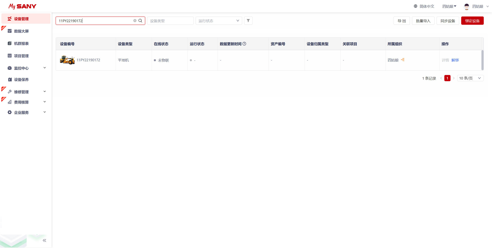
点击查看截图
设备管理页 - 顶部筛选功能用例。12 条用例
通过顶部"运行状态"选 工作 筛选 → 当前页所有有效行运行状态均为 工作。
用例 #22.6s
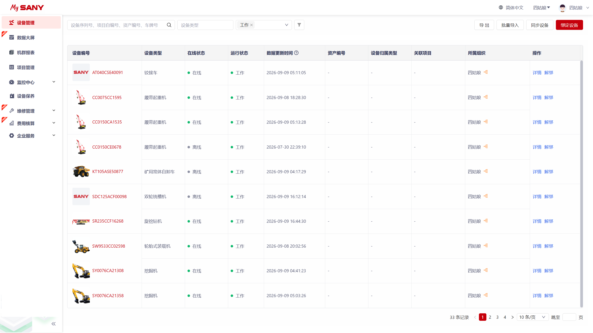
点击查看截图
通过顶部"运行状态"选 上电 筛选 → 当前页所有有效行运行状态均为 上电。
用例 #34.0s
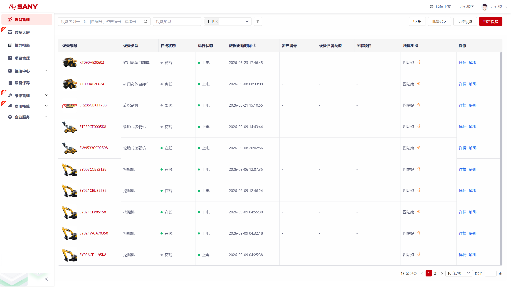
点击查看截图
通过顶部"运行状态"选 停车 筛选 → 当前页所有有效行运行状态均为 停车。
用例 #43.3s
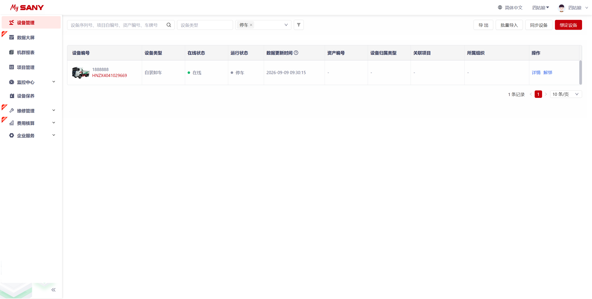
点击查看截图
通过顶部"运行状态"选 停车在线 筛选 → 当前页所有有效行运行状态均为 停车在线。
用例 #52.1s
点击查看截图
通过顶部"运行状态"选 怠速 筛选 → 当前页所有有效行运行状态均为 怠速。
用例 #62.5s
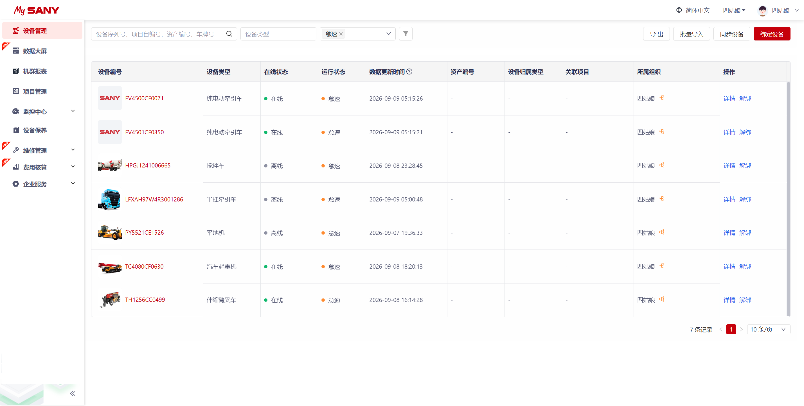
点击查看截图
通过顶部"运行状态"选 离线 筛选 → 当前页所有有效行运行状态均为 离线。
用例 #72.7s
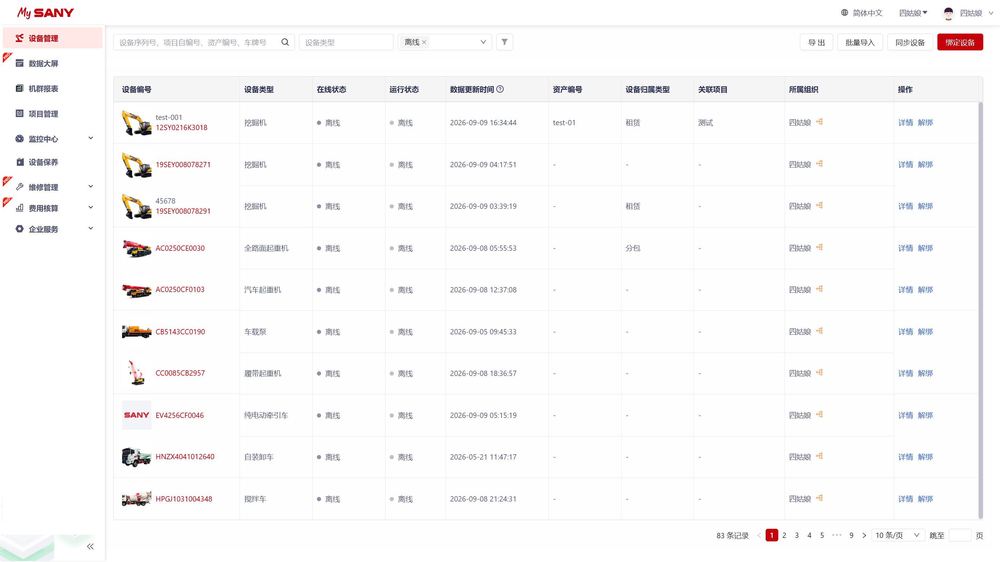
点击查看截图
通过顶部"运行状态"选 行驶 筛选 → 当前页所有有效行运行状态均为 行驶。
用例 #82.9s
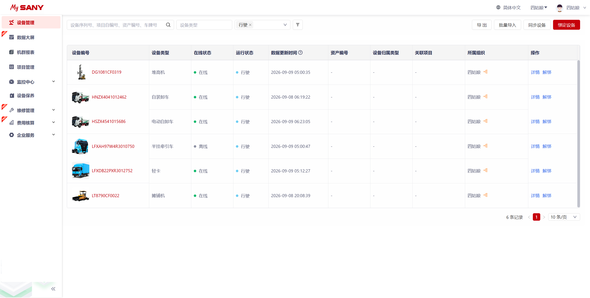
点击查看截图
通过顶部"运行状态"选 关机 筛选 → 当前页所有有效行运行状态均为 关机。
用例 #92.2s
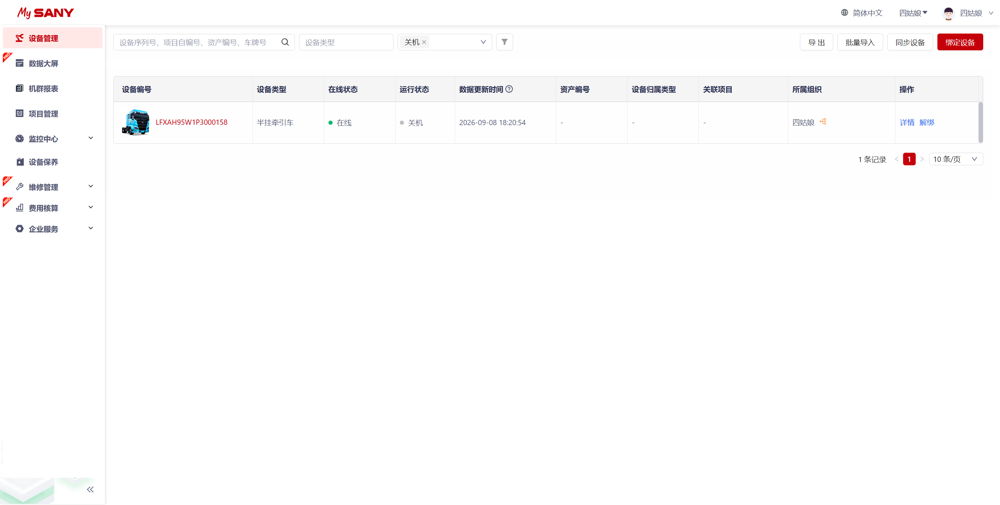
点击查看截图
通过顶部"运行状态"选 充电 筛选 → 当前页所有有效行运行状态均为 充电。
用例 #104.1s
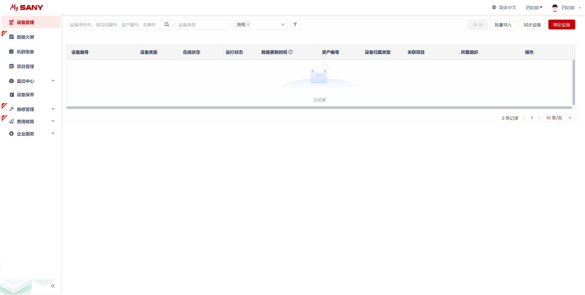
点击查看截图
通过顶部"设备类型"Cascader 勾选 挖掘机 → 当前页所有有效行设备类型均为 挖掘机。
用例 #113.2s
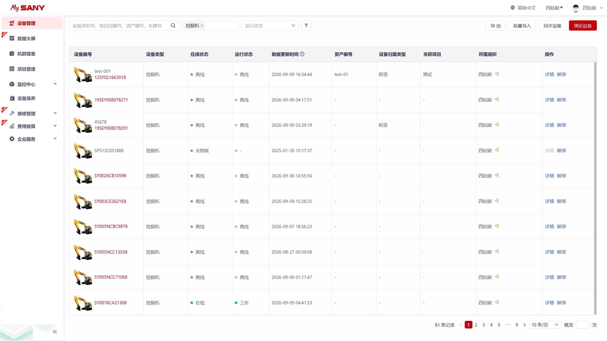
点击查看截图
通过顶部"设备类型"Cascader 勾选 汽车起重机 → 当前页所有有效行设备类型均为 汽车起重机。
用例 #123.0s
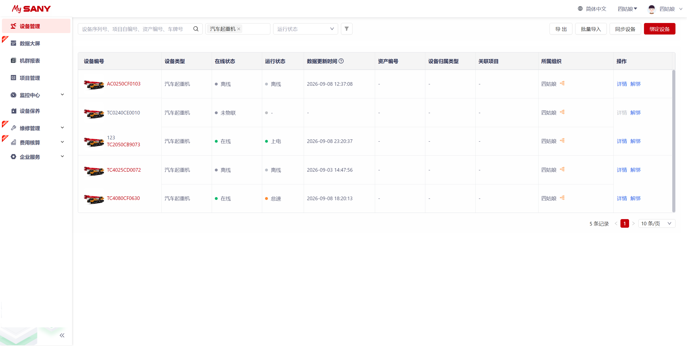
点击查看截图
通过顶部"设备类型"Cascader 勾选 履带起重机 → 当前页所有有效行设备类型均为 履带起重机。
用例 #132.7s
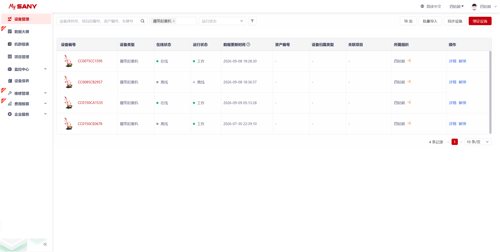
点击查看截图
设备管理页 - "设备品牌"筛选用例（端到端）。2 条用例
通过顶部"设备品牌"选 Sany → 详情页设备档案中品牌字段应为 Sany。
用例 #147.1s

点击查看截图
通过顶部"设备品牌"选 XCMG → 详情页设备档案中品牌字段应为 XCMG。
用例 #153.6s
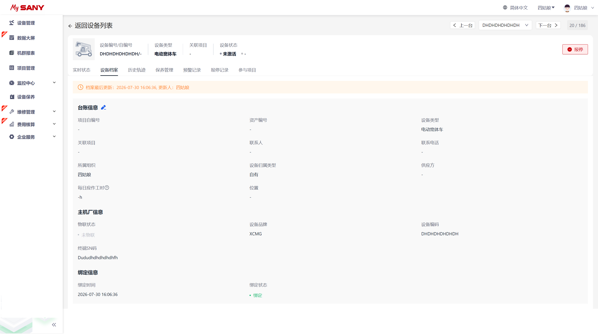
点击查看截图
设备管理页 - 在线状态筛选用例。3 条用例
通过选择"在线状态"=在线筛选 → 当前页所有有效行在线状态均为 在线。
用例 #162.6s
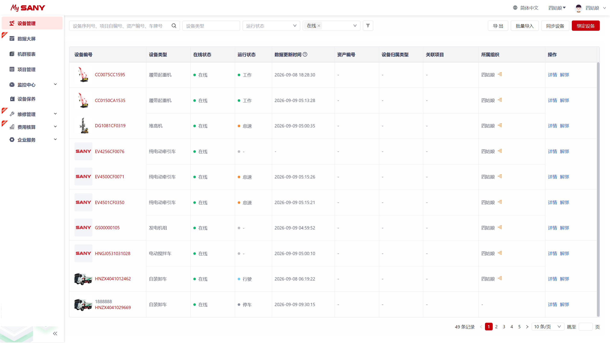
点击查看截图
通过选择"在线状态"=离线筛选 → 当前页所有有效行在线状态均为 离线。
用例 #172.6s
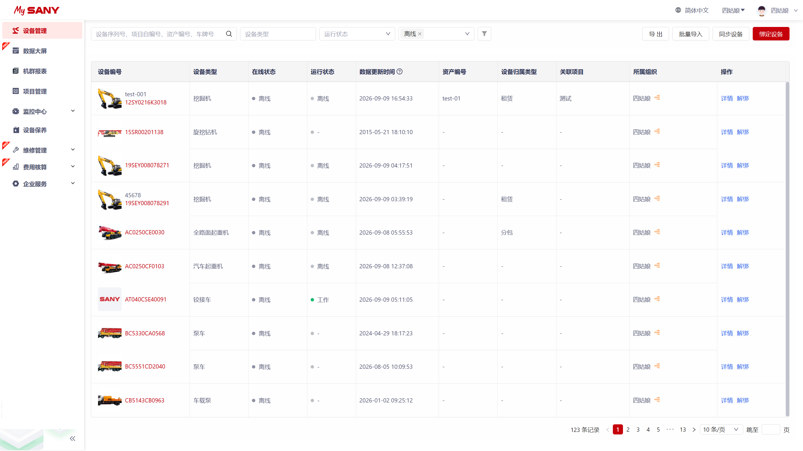
点击查看截图
通过选择"在线状态"=未物联筛选 → 当前页所有有效行在线状态均为 未物联。
用例 #183.1s
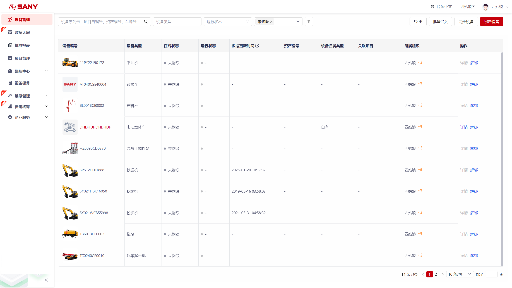
点击查看截图
设备管理页 - "设备归属类型"筛选用例。3 条用例
通过顶部"设备归属类型"选 自有 筛选 → 当前页所有有效行设备归属类型均为 自有。
用例 #193.0s
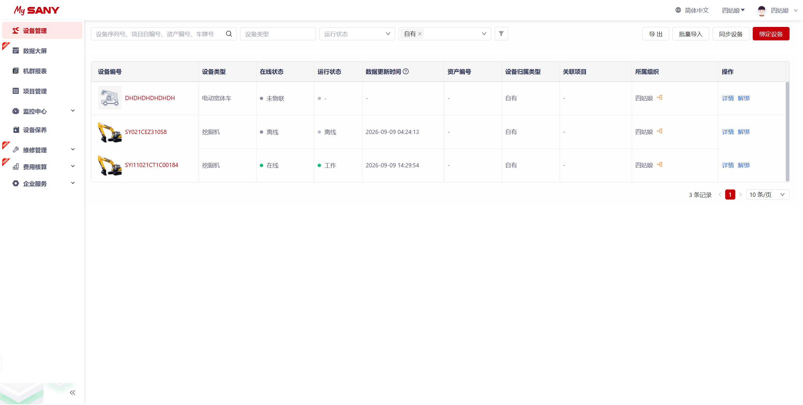
点击查看截图
通过顶部"设备归属类型"选 租赁 筛选 → 当前页所有有效行设备归属类型均为 租赁。
用例 #202.7s
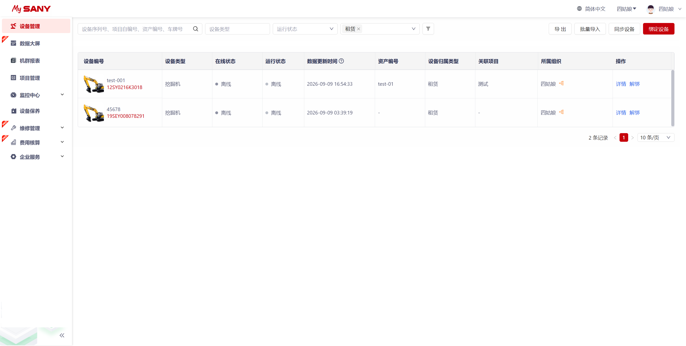
点击查看截图
通过顶部"设备归属类型"选 分包 筛选 → 当前页所有有效行设备归属类型均为 分包。
用例 #212.3s
点击查看截图
设备管理页 - 按"所属项目"筛选用例。1 条用例
通过顶部"所属项目"选择列表第一个选项 → 当前页所有有效行关联项目均等于该选项。
用例 #223.0s
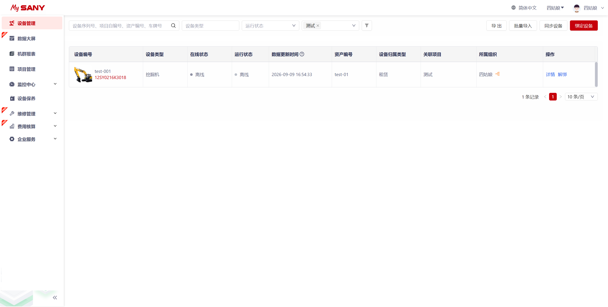
点击查看截图
设备管理页 - "供应方"筛选（文本框）用例（端到端）。1 条用例
通过顶部"供应方"输入 测试 → 详情页设备档案中供应方字段应为 测试。
用例 #234.3s

点击查看截图
设备详情页 - "实时状态"模块用例（基准设备 12SY0216K3018）。14 条用例
通过进入详情默认激活"实时状态"tab，且 tab 栏完整（含设备档案/历史轨迹等）。
用例 #240.1s
点击查看截图
通过头部身份信息：设备编号=基准编号、设备类型、关联项目均正确展示。
用例 #250.0s
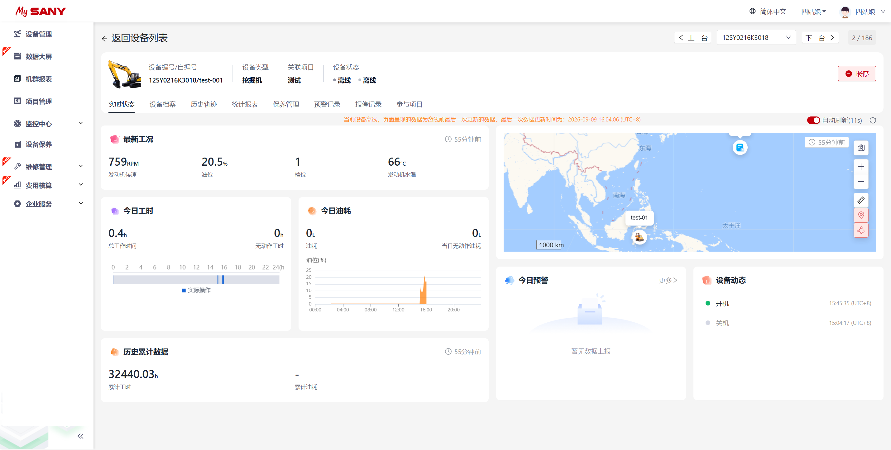
点击查看截图
通过头部"设备状态"值合法（在线/离线 + 运行状态），且存在"报停"按钮。
用例 #260.0s
点击查看截图
通过实时数据加载完成：顶部数据时间按设备状态展示——设备在线时出现
用例 #270.4s
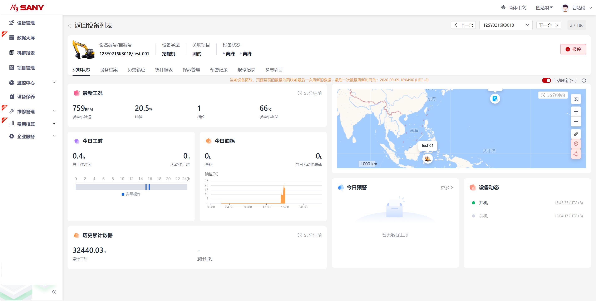
点击查看截图
通过最新工况四字段齐全：发动机转速/油位/档位/发动机水温。
用例 #280.0s
点击查看截图
通过最新工况数值格式：转速=RPM、油位=%、档位=整数、水温=°C；设备工作中转速应>0。
用例 #290.0s
点击查看截图
通过今日工时含"总工作时间/无动作工时"，格式为数字h 且非负。
用例 #300.0s
点击查看截图
通过今日油耗含"油耗/当日无动作油耗"，格式为数字L 且非负。
用例 #310.0s
点击查看截图
通过历史累计数据含"累计工时/累计油耗"；累计工时必须有值，累计油耗可为 '-' 占位。
用例 #320.0s
点击查看截图
通过"数据更新时间"按设备状态两种形态展示：在线为
用例 #330.2s
点击查看截图
通过自动刷新开关默认开启（aria-checked=true），倒计时文本持续变化（时间在走）。
用例 #343.1s
点击查看截图
通过地图渲染完成：leaflet 容器存在、缩放/比例尺/地图类型控件齐全、有设备 marker。
用例 #350.0s
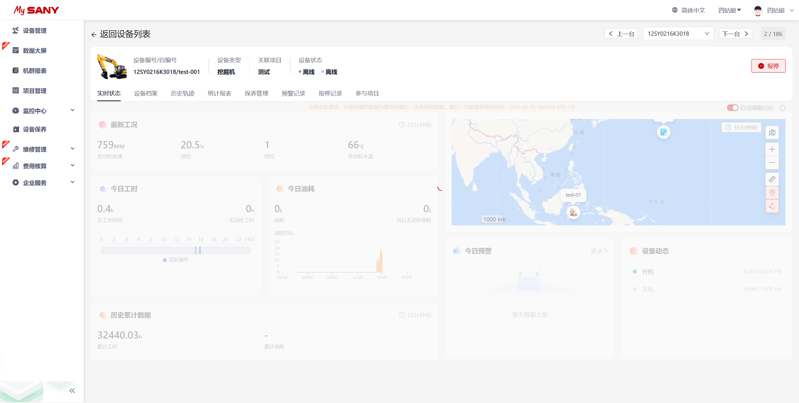
点击查看截图
通过今日预警卡："更多"入口存在，内容为"暂无数据上报"空态或有事件行。
用例 #360.0s

点击查看截图
通过设备动态：至少 1 条事件，每条含事件名与 HH:MM:SS (UTC+8) 时间。
用例 #370.0s
点击查看截图
设备详情页 - "设备档案"模块用例（基准设备 12SY0216K3018）。18 条用例
通过详情页已切换到"设备档案"tab，且 tab 栏含该选项。
用例 #380.0s

点击查看截图
通过顶部提示条"档案最后更新"时间格式正确，且时间非未来。
用例 #390.2s

点击查看截图
通过顶部提示条"更新人"字段有值。
用例 #400.2s

点击查看截图
通过台账"项目自编号"展示为"test-001"。
用例 #410.0s

点击查看截图
通过台账"资产编号"展示为"test-01"。
用例 #420.0s

点击查看截图
通过台账"设备类型"展示为"挖掘机"。
用例 #430.0s

点击查看截图
通过台账"关联项目"展示为"测试"。
用例 #440.0s
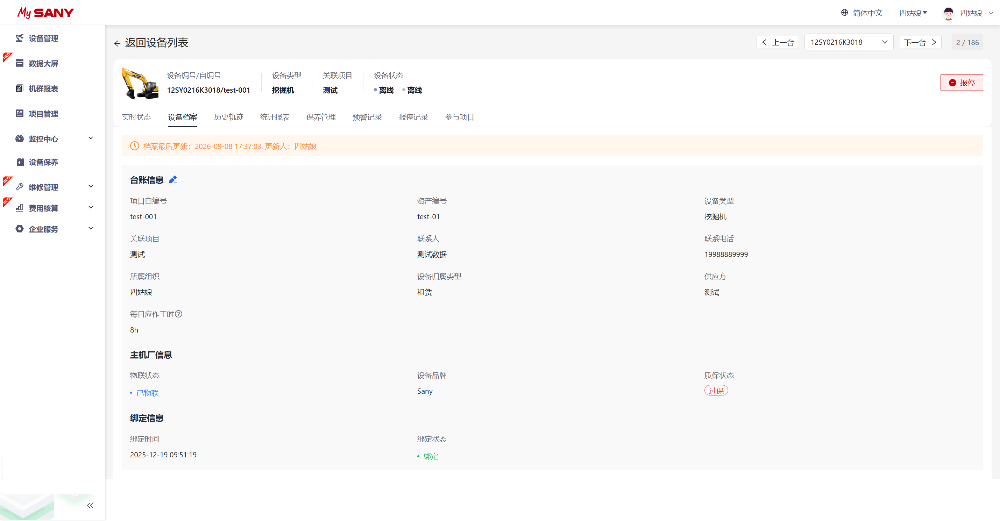
点击查看截图
通过台账"联系人"展示为"测试数据"。
用例 #450.0s

点击查看截图
通过台账"联系电话"展示为"19988889999"。
用例 #460.0s

点击查看截图
通过台账"所属组织"展示为"四姑娘"。
用例 #470.0s

点击查看截图
通过台账"设备归属类型"展示为"租赁"。
用例 #480.0s

点击查看截图
通过台账"供应方"展示为"测试"。
用例 #490.0s

点击查看截图
通过台账"每日应作工时"格式为数字+h，且合理（>0）。
用例 #500.0s

点击查看截图
通过主机厂"物联状态"展示为"已物联"。
用例 #510.0s

点击查看截图
通过主机厂"设备品牌"展示为"Sany"。
用例 #520.0s

点击查看截图
通过主机厂"质保状态"展示为"过保"。
用例 #530.0s

点击查看截图
通过绑定"绑定时间"格式为 YYYY-MM-DD HH:MM:SS。
用例 #540.0s

点击查看截图
通过绑定"绑定状态"展示为"绑定"。
用例 #550.0s

点击查看截图
设备详情页 - 顶部搜索切换设备 + "统计报表"模块用例（基准设备 SY013NCC19368）。20 条用例
通过详情页右上角设备切换器存在（"上一台"+"设备编号下拉"+"下一台"）。
用例 #560.3s
点击查看截图
通过右上角搜索 SY013NCC19368 后切到该设备（切换器与头部编号一致、URL 为 detail 路由）。
用例 #570.1s
点击查看截图
通过切换后的设备详情页 tab 栏含"统计报表"（该设备才有此 tab）。
用例 #580.0s

点击查看截图
通过详情页已激活"统计报表"tab。
用例 #590.0s
点击查看截图
通过时间维度为"日视图/周视图/月视图"三选一，且能切回"日视图"作为基线。
用例 #600.8s
点击查看截图
通过切换到"周视图"后激活态变更为"周视图"。
用例 #611.1s
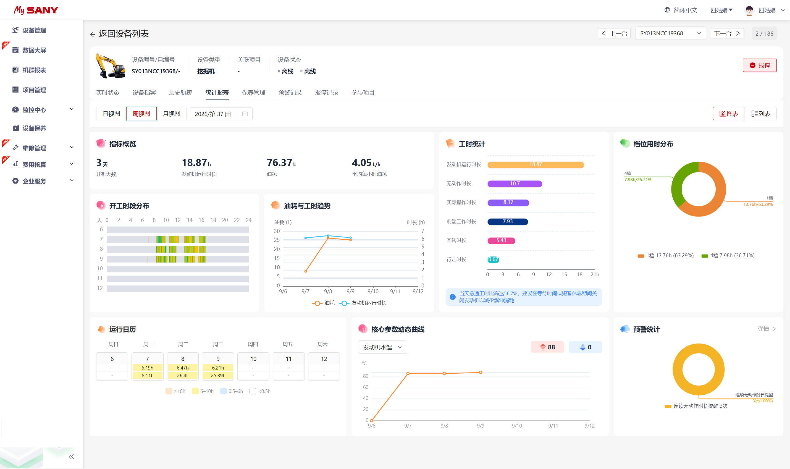
点击查看截图
通过切换到"月视图"后激活态变更为"月视图"。
用例 #621.6s
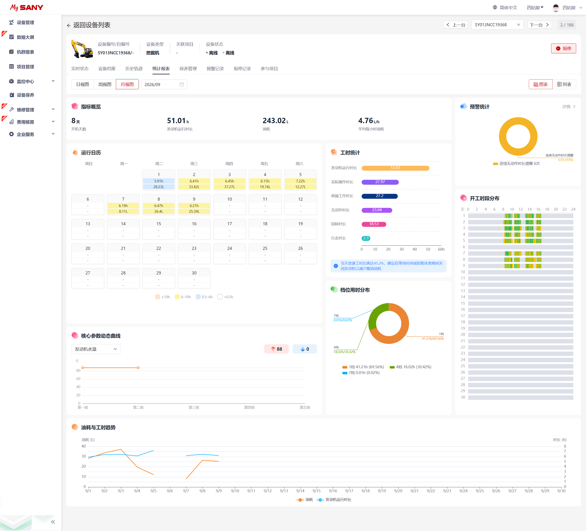
点击查看截图
通过切回"日视图"激活态更新。
用例 #631.2s
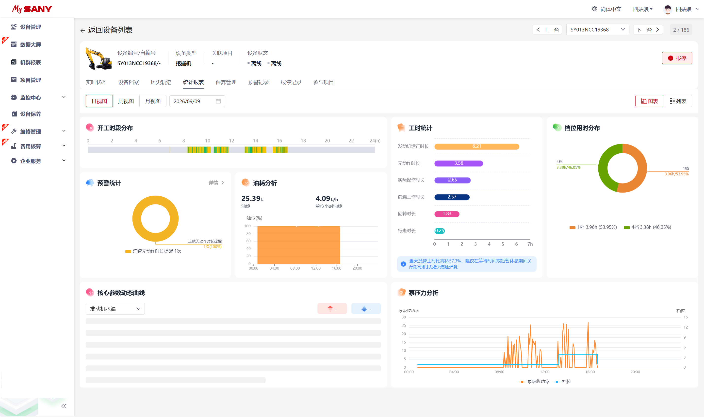
点击查看截图
通过默认展示模式为"图表"（先切回作为基线）。
用例 #640.6s

点击查看截图
通过点击"列表"按钮后，页面切换为列表模式（"列表"激活、"图表"非激活）。
用例 #651.0s
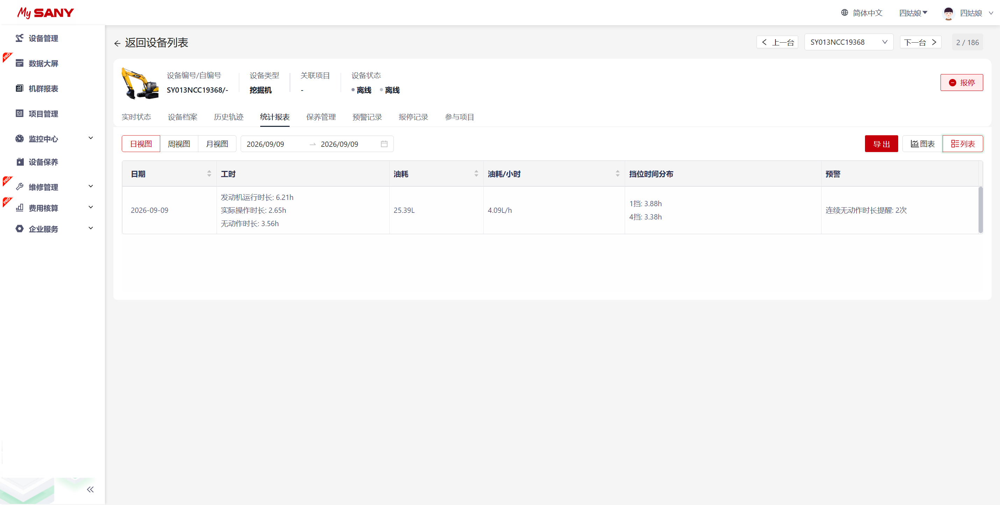
点击查看截图
通过点击"图表"按钮后切回图表模式（"图表"激活、"列表"非激活）。
用例 #661.0s
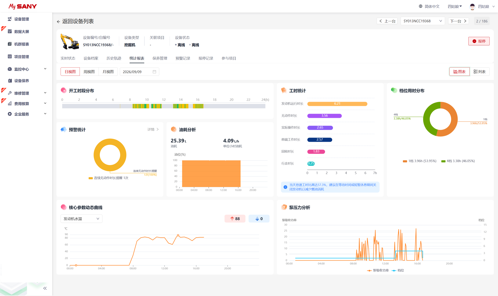
点击查看截图
通过统计报表关键卡片齐全：开工时段分布/档位用时分布/预警统计详情/核心参数动态曲线/泵压力分析。
用例 #670.0s

点击查看截图
通过各卡片均渲染出图表（canvas 或 svg 至少 1）。
用例 #680.1s

点击查看截图
通过"开工时段分布"卡片已渲染图表。
用例 #690.0s

点击查看截图
通过"档位用时分布"卡片已渲染图表。
用例 #700.0s

点击查看截图
通过"预警统计详情"卡片已渲染图表。
用例 #710.0s

点击查看截图
通过"油耗分析"卡片已渲染图表。
用例 #720.0s

点击查看截图
通过"核心参数动态曲线"卡片已渲染图表。
用例 #730.0s

点击查看截图
通过"泵压力分析"卡片已渲染图表。
用例 #740.0s

点击查看截图
通过统计报表面板无 loading 动画（卡片已就绪）。
用例 #750.0s
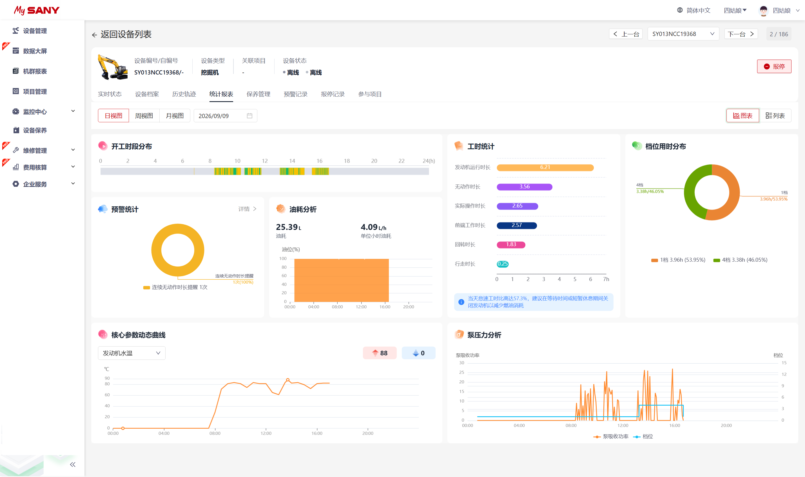
点击查看截图
设备详情页 - "保养管理"模块用例（基准设备 SY013NCC19368）。18 条用例
通过详情页已激活"保养管理"tab。
用例 #760.0s

点击查看截图
通过顶部 3 张统计卡片齐全：上次保养/保养工况/下次保养。
用例 #770.0s
点击查看截图
通过"上次保养"与"保养工况"卡片含"小时"数值（数字+h）。
用例 #780.0s

点击查看截图
通过筛选工具栏（日期范围 + 保养类型 + 搜索框）齐全。
用例 #790.0s

点击查看截图
通过保养记录表头齐全：保养日期/保养类型/保养项目摘要/保养人/保养总工时/总费用/操作。
用例 #800.0s

点击查看截图
通过保养记录表格至少 1 条数据行。
用例 #810.0s

点击查看截图
通过保养记录日期格式正确（YYYY-MM-DD）。
用例 #820.0s

点击查看截图
通过"保养时工况"格式正确（含数字+h，兼容"总工时: 7677h"这类带前缀的写法）。
用例 #830.0s
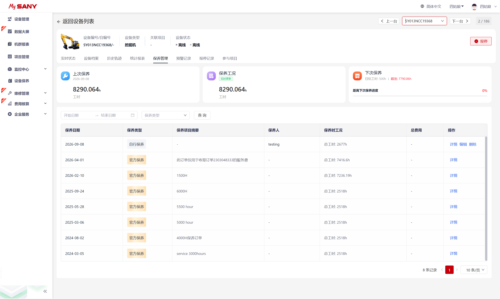
点击查看截图
通过每行"操作"列至少含"详情"按钮。
用例 #840.0s

点击查看截图
通过保养记录表格有分页器（含"条记录/条/页"文案）。
用例 #850.0s

点击查看截图
通过保养管理面板无 loading 动画（内容已就绪）。
用例 #860.0s

点击查看截图
失败设置日期范围 2026-03-01 ~ 2026-05-01：表格即时刷新，结果日期均落在该范围内。
用例 #876.4s
▸ 失败详情 / 日志
tests\device\test_machine_detail_maintenance.py:209: in test_maintenance_date_range_filter
assert rows, '按日期范围[%s ~ %s]筛选后无数据' % (DATE_START, DATE_END)
E AssertionError: 按日期范围[2026-03-01 ~ 2026-05-01]筛选后无数据
E assert []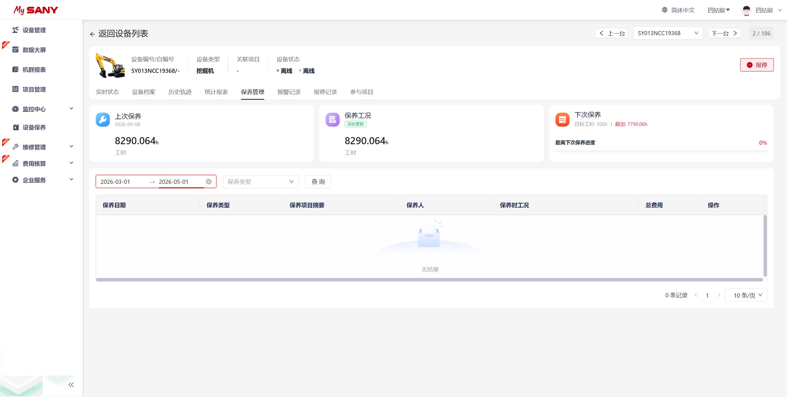
点击查看截图
失败设置日期范围后悬浮日期框点击清除图标（x）：日期被清空，再点"查询"恢复全量数据。
用例 #8810.8s
▸ 失败详情 / 日志
tests\device\test_machine_detail_maintenance.py:229: in test_maintenance_date_range_clear
assert rows, '移除日期条件并查询后仍无数据'
E AssertionError: 移除日期条件并查询后仍无数据
E assert []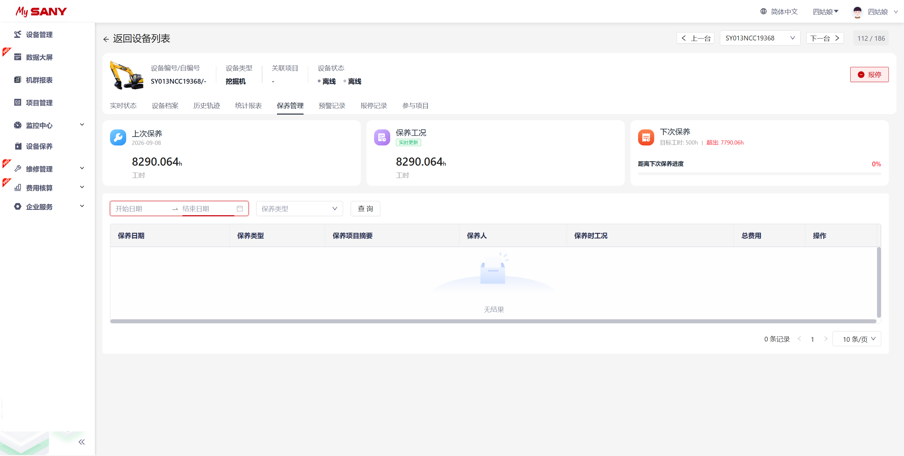
点击查看截图
通过筛选"保养类型=官方保养"：选中后表格即时刷新，返回结果行均为该类型。
用例 #893.1s
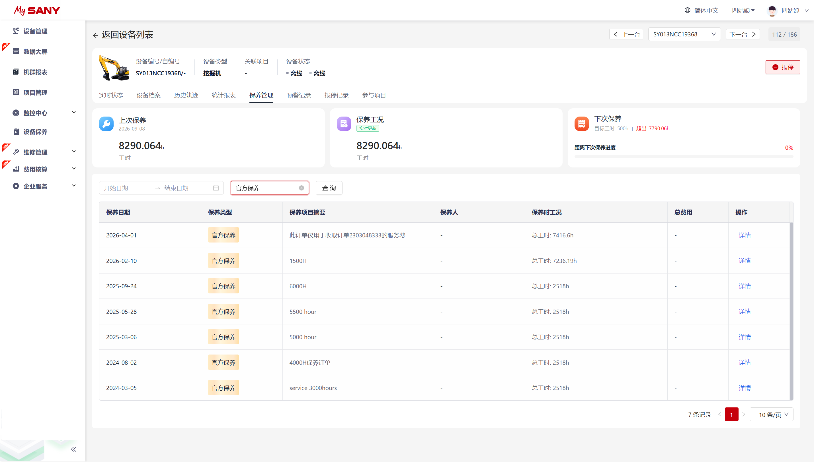
点击查看截图
通过切换筛选"保养类型=自行保养"：选中后表格即时刷新，返回结果行均为该类型。
用例 #903.1s
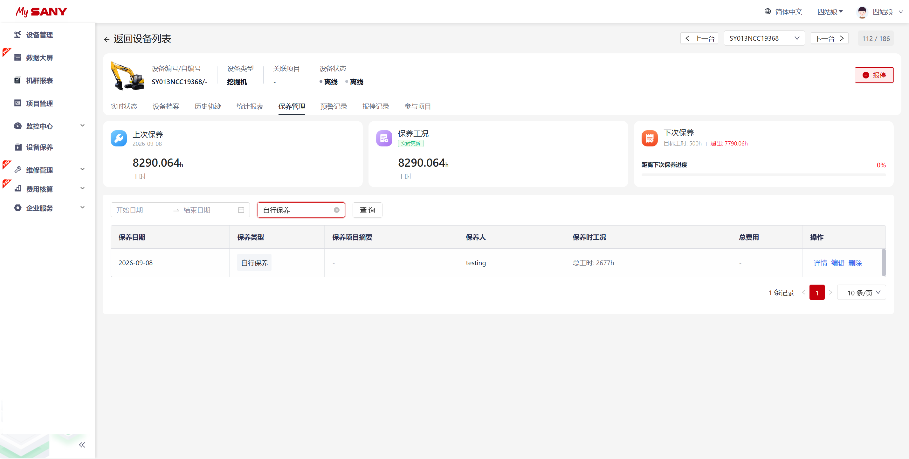
点击查看截图
失败选择保养类型后点击"查询"按钮：应按筛选条件返回（结果行均为所选类型）。
用例 #913.1s
▸ 失败详情 / 日志
tests\device\test_machine_detail_maintenance.py:292: in test_maintenance_type_filter_by_search_button
assert r.get('保养类型') == '官方保养', (
E AssertionError: 点击"查询"后存在非"官方保养"的行: {'保养人': 'testing', '保养日期': '2026-09-08', '保养时工况': '总工时: 2677h', '保养类型': '自行保养', '保养项目摘要': '-', '总费用': '-', '操作': '详情编辑删除'}
E assert '自行保养' == '官方保养'
E - 官方保养
E + 自行保养点击查看截图
失败"上次保养"卡片的工时数值，应与最新一条保养记录的"保养时工况"数值一致。
用例 #920.1s
▸ 失败详情 / 日志
tests\device\test_machine_detail_maintenance.py:315: in test_maintenance_last_service_matches_latest_record
assert abs(card_h - rec_h) < 0.001, (
E AssertionError: "上次保养"卡片工时 8290.064h 与最新保养记录时工况 2677.0h 不一致（记录: {'保养人': 'testing', '保养日期': '2026-09-08', '保养时工况': '总工时: 2677h', '保养类型': '自行保养', '保养项目摘要': '-', '总费用': '-', '操作': '详情编辑删除'}）
E assert 5613.064 < 0.001
E + where 5613.064 = abs((8290.064 - 2677.0))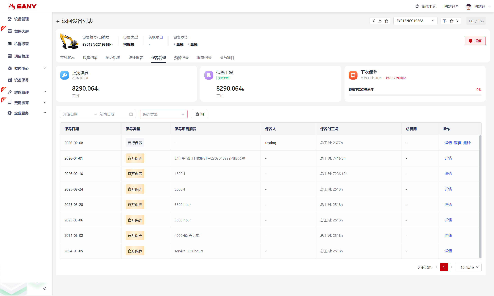
点击查看截图
失败选择"保养类型=自行保养"后点击"查询"按钮：应按筛选条件返回（结果行均为自行保养）。
用例 #933.2s
▸ 失败详情 / 日志
tests\device\test_machine_detail_maintenance.py:330: in test_maintenance_type_self_by_search_button
assert r.get('保养类型') == '自行保养', (
E AssertionError: 点击"查询"后存在非"自行保养"的行: {'保养人': '-', '保养日期': '2026-04-01', '保养时工况': '总工时: 7416.6h', '保养类型': '官方保养', '保养项目摘要': '此订单仅用于收取订单2303048333的服务费', '总费用': '-', '操作': '详情'}
E assert '官方保养' == '自行保养'
E - 自行保养
E + 官方保养点击查看截图
临时诊断 v2：等详情页渲染完成后再 dump 顶部搜索框 DOM。用完即删。1 条用例
通过进入详情页、等 tab 栏出现后，dump input / 搜索相关节点 / 顶部结构。
用例 #9425.6s
点击查看截图
临时诊断：统计报表页滚动容器 + CDP 全页截图可行性。用完即删。1 条用例
通过进入统计报表 tab，dump 滚动容器并测试 CDP captureBeyondViewport。
用例 #9537.0s
点击查看截图
没有符合条件的用例